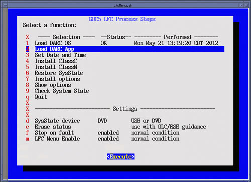
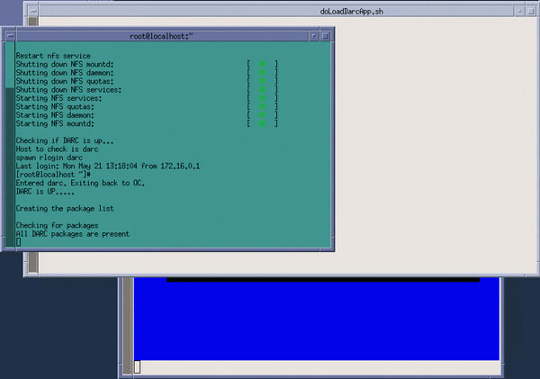
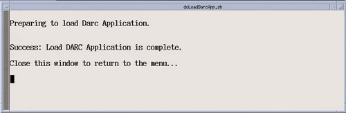

Insert Applications Disk (Same disk used to load Host Applications) in Host DVD drive.
Select Load DARC App (Menu Selection # 2)
Select [Execute], two shell windows will open and the DARC App software will be loaded.
Upon completion of the DARC App software load, close the two execution shell windows to return to the LFC Menu.
Remove the Applications Disk from the Host DVD drive.
Illustration 23: LFC Menu - Load DARC App Selection

Illustration 24: Load DARC App Execution - Shell Window

Illustration 25: Load DARC App Execution - Load Completion
